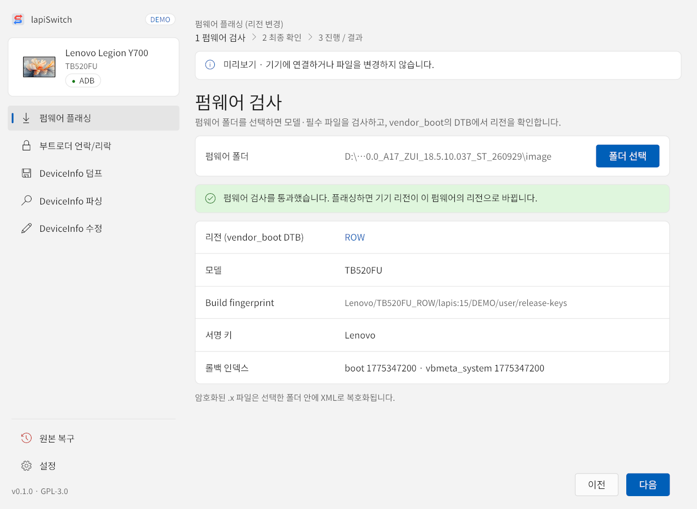
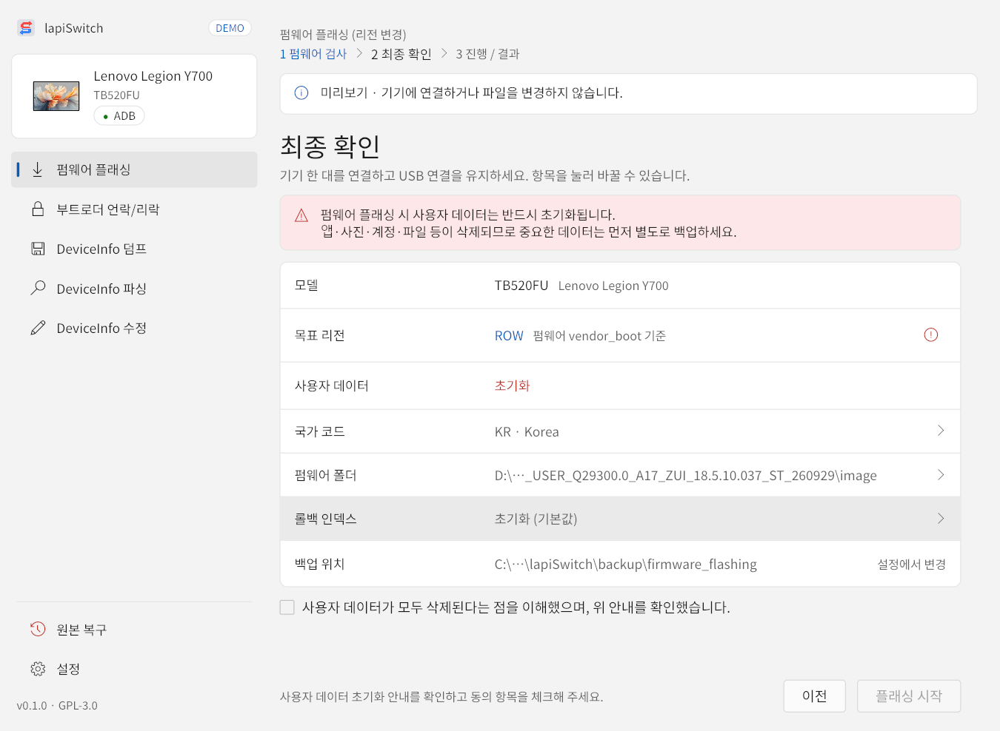
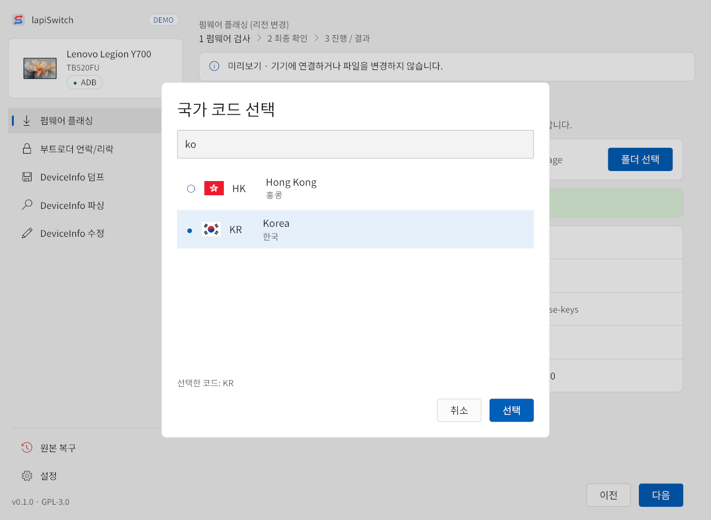

왼쪽 메뉴의 펌웨어 플래싱은 공식 펌웨어를 설치하면서 기기 리전을 그 펌웨어의 리전으로 바꿉니다. 위쪽에 1 펌웨어 검사 → 2 최종 확인 → 3 진행 / 결과 순서가 표시되고, 지난 단계는 눌러서 돌아갈 수 있습니다.
- 펌웨어 검사
- 최종 확인
- 자동 진행 10단계
- 완료
1펌웨어 검사
- 폴더 선택을 눌러 압축을 푼 공식 펌웨어 폴더를 고릅니다.
- 앱이 모델·필수 파일을 검사하고,
vendor_boot의 DTB에서 펌웨어 리전을 확인합니다. 암호화된.x파일은 선택한 폴더 안에 XML로 복호화됩니다. - “펌웨어 검사를 통과했습니다”가 나오면 다음을 누릅니다.

| 표시 항목 | 뜻 |
|---|---|
| 리전 (vendor_boot DTB) | 펌웨어의 리전. 이 값이 목표 리전이 됩니다. |
| 모델 | 펌웨어가 어느 모델용인지. 연결된 기기와 같아야 합니다. |
| Build fingerprint | 펌웨어 빌드 식별 문자열 |
| 서명 키 | 펌웨어 이미지 서명 키 종류 |
| 롤백 인덱스 | boot·vbmeta_system의 롤백 인덱스. 기기 값과 비교하는 데 쓰입니다. |
2최종 확인
시작 전에 고른 내용을 마지막으로 확인하는 화면입니다. 화살표(›)가 있는 항목은 눌러서 바꿀 수 있습니다. 동의 항목을 체크해야 플래싱 시작이 활성화됩니다.

1 2 3 4 5 6 7 8- 1데이터 초기화 안내 — 펌웨어 플래싱은 사용자 데이터를 반드시 초기화합니다.
- 2목표 리전 — 펌웨어 vendor_boot 기준. 아래 사용자 데이터는 항상 “초기화”입니다.
- 3국가 코드 — 눌러서 바꿉니다(아래 그림).
- 4펌웨어 폴더 — 누르면 펌웨어 검사로 돌아갑니다.
- 5롤백 인덱스 — 초기화 (기본값)는 DeviceInfo의 롤백 인덱스 32개를 0으로 바꿔 낮은 인덱스의 펌웨어도 설치할 수 있게 합니다. 유지는 기존 값을 그대로 둡니다.
- 6백업 위치 — 이번 작업의 원본 백업이 저장될 곳(
backup\firmware_flashing). 설정에서 바꿀 수 있습니다. - 7동의 체크 — “사용자 데이터가 모두 삭제된다는 점을 이해했으며, 위 안내를 확인했습니다.”
- 8플래싱 시작 — 누르는 즉시 작업이 시작됩니다. 시작할 수 없는 이유가 있으면 왼쪽에 회색 글씨로 표시됩니다.
3국가 코드 고르기
국가 코드 항목을 누르면 국가 코드 창이 열립니다. 국가명(한국어·영어 등)이나 코드로 검색할 수 있습니다. 예를 들어 ko, 한국, Korea, KR 모두 대한민국을 찾습니다. 원하는 항목을 고르고 선택을 누르세요. 기존 국가 코드를 그대로 두려면 목록 맨 위의 변경 안 함을 고릅니다.

ko로 검색한 결과. 아래 ‘선택한 코드’에서 현재 값을 확인할 수 있습니다.